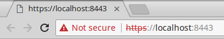

compile "io.micronaut:http-server-netty"6 The HTTP Server
Version: 1.0.0.BUILD-SNAPSHOT
Table of Contents
6 The HTTP Server
Micronaut includes both non-blocking HTTP server and client APIs based on Netty.
The design of the HTTP server in Micronaut is optimized for interchanging messages between Microservices, typically in JSON, and is not intended as a full server-side MVC framework. For example, there is currently no support for server-side views or features typical of a traditional server-side MVC framework.
The goal of the HTTP server is to make it as easy as possible to expose APIs that can be consumed by HTTP clients, whatever language they may be written in. To use the HTTP server you must have the http-server-netty dependency on your classpath. For example in build.gradle:
build.gradle
A "Hello World" server application written in Java can be seen below:
Micronaut Server Hello World
import io.micronaut.http.annotation.*;
@Controller("/hello") (1)
public class HelloController {
@Get("/") (2)
public String index() {
return "Hello World"; (3)
}
}| 1 | The class is defined as a controller with the @Controller annotation mapped to the path /hello |
| 2 | The scope of the @Controller is singleton |
| 3 | By defining method called index, by convention the method is exposed via the /hello URI |
6.1 Running the Embedded Server
To run the server simply create an Application class with a static void main method. For example:
Micronaut Application Class
import io.micronaut.runtime.Micronaut;
public class Application {
public static void main(String[] args) {
Micronaut.run(Application.class);
}
}To run the application from a unit test you can use the EmbeddedServer interface. The following test is written in Groovy with Spock:
Micronaut Spock Test
import io.micronaut.context.ApplicationContext
import io.micronaut.http.HttpRequest
import io.micronaut.http.client.HttpClient
import io.micronaut.runtime.server.EmbeddedServer
import spock.lang.*
class HelloControllerSpec extends Specification {
@Shared @AutoCleanup EmbeddedServer embeddedServer =
ApplicationContext.run(EmbeddedServer) (1)
@Shared @AutoCleanup HttpClient client = HttpClient.create(embeddedServer.URL) (2)
void "test hello world response"() {
expect:
client.toBlocking() (3)
.retrieve(HttpRequest.GET('/hello')) == "Hello World" (4)
}
}| 1 | The EmbeddedServer is run and Spock’s @AutoCleanup annotation ensures the server is stopped after the specification completes. |
| 2 | The EmbeddedServer interface provides the URL of the server under test which runs on a random port. |
6.2 Running Server on a Specific Port
The server starts by default on a random port. However, you can set the server to run on a specific port:
micronaut:
server:
port: 80806.3 HTTP Routing
The @Controller annotation used in the previous section is one of several annotations that allow you to control the construction of HTTP routes.
URI Paths
In the previous example a value of /hello was specified as the path to the controller. If no value is specified to the @Controller action then the URI is formulated from the class name.
The following table summarizes values for the @Controller annotation and the calculated base paths:
| Class Name | Annotation | Path |
|---|---|---|
|
|
|
|
|
|
|
|
|
|
|
|
The value of the @Controller annotation is a RFC-6570 URI template you can therefore embed URI variables within the path using the syntax defined by the URI template specification.
| Many other frameworks, including Spring, implement the URI template specification |
URI Variables
URI variables can be referenced via method arguments. For example:
URI Variables Example
import io.micronaut.http.annotation.*;
import javax.inject.Singleton;
@Controller (1)
public class IssuesController {
@Get("/{number}") (2)
String issue(Integer number) {
return "Issue # " + number + "!"; (3)
}
}| 1 | The @Controller annotation is specified without an argument resulting in a base URI of /issues |
| 2 | The Get annotation is used to map the method to an HTTP GET with a URI variable embedded in the URI called number |
| 3 | The value of the URI variable is referenced in the implementation |
Micronaut will map the URI /issues/{number} for the above controller. We can assert this is the case by writing a unit test, this time in Java and JUnit:
Testing URI Variables
import io.micronaut.context.ApplicationContext;
import io.micronaut.http.client.HttpClient;
import org.junit.*;
import io.micronaut.runtime.server.EmbeddedServer;
import static org.junit.Assert.*;
public class IssuesControllerTest {
private static EmbeddedServer server;
private static HttpClient client;
@BeforeClass (1)
public static void setupServer() {
server = ApplicationContext.run(EmbeddedServer.class);
client = server
.getApplicationContext()
.createBean(HttpClient.class, server.getURL());
}
@AfterClass (1)
public static void stopServer() {
if(server != null) {
server.stop();
}
if(client != null) {
client.stop();
}
}
@Test
public void testIssue() throws Exception {
String body = client.toBlocking().retrieve("/issues/12"); (2)
assertNotNull(body);
assertEquals( (3)
body,
"Issue # 12!"
);
}
}| 1 | For JUnit you can write methods to start and stop the server for the scope of the test |
| 2 | The tests sends a request to the URI /issues/12 |
| 3 | And then asserts the response is "Issue # 12" |
If you invoke the previous endpoint without the required URI variable or with an invalid type, Micronaut responds with the appropriate HTTP failure codes as illustrated in the following Spock tests that use the HTTP client.
Testing for Response Errors
void "/issues/show/{number} with an invalid Integer number responds 400"() {
when:
client.toBlocking().exchange("/issues/hello")
then:
HttpClientResponseException e = thrown(HttpClientResponseException)
e.status.code == 400
}
void "/issues/show/{number} without number responds 404"() {
when:
client.toBlocking().exchange("/issues/")
then:
HttpClientResponseException e = thrown(HttpClientResponseException)
e.status.code == 404
}Note that the URI template in the previous example requires that the number variable is specified. You can specify optional URI templates with the syntax: /issues{/number} and by annotating the number parameter with @Nullable.
The following table provides some examples of URI templates and what they match:
| Template | Description | Matching URI |
|---|---|---|
|
Simple match |
|
|
A variable of 2 characters max |
|
|
An optional URI variable |
|
|
An optional URI variable with regex |
|
|
Optional query parameters |
|
|
Regex path match with extension |
|
Routing Annotations
The previous example used the @Get annotation to add method that accepted HTTP GET requests. The following tables summarizes the available annotations and how they map to the different HTTP methods:
| Annotation | HTTP Method |
|---|---|
If no URI path is specified to any of the annotations then the method name is used as the URI. In other words both of the following methods are essentially equivalent and map to the /hello URI:
@Get("/hello")
String hello() {
return "Hello World";
}
@Get
String hello() {
return "Hello World";
}Building Routes Programmatically
If you prefer to not use annotations and declare all of your routes in code then never fear, Micronaut has a flexible RouteBuilder API that makes it a breeze to define routes programmatically.
To start off with you should subclass DefaultRouteBuilder and then simply inject the controller you wish to route to into the method and define your routes:
RouteBuilder Example
import io.micronaut.context.ExecutionHandleLocator;
import io.micronaut.web.router.DefaultRouteBuilder;
import javax.inject.*;
@Singleton
public class MyRoutes extends DefaultRouteBuilder { (1)
public MyRoutes(ExecutionHandleLocator executionHandleLocator, UriNamingStrategy uriNamingStrategy) {
super(executionHandleLocator, uriNamingStrategy);
}
@Inject
void issuesRoutes(IssuesController issuesController) { (2)
GET("/show/{name}", issuesController, "issue", Integer.class); (3)
}
}| 1 | Route definitions should subclass DefaultRouteBuilder |
| 2 | Use @Inject to inject a method with the controllers you want to route to |
| 3 | Use methods such as GET to route to controller methods |
Unfortunately due to type erasure a Java method lambda reference cannot be used with the API. For Groovy there is a GroovyRouteBuilder class which can be subclassed that allows passing Groovy method references.
|
6.4 Simple Request Binding
The examples in the previous section demonstrates how Micronaut allows you to bind method parameters from URI path variables.
Binding Annotations
You can customize the name of the variable bound with the @Parameter annotation which accepts a value which is the name of the URI variable or request parameter to bind from.
In addition, there are other annotations within the io.micronaut.http.annotation package to bind from different sources.
The following table summarizes the annotations, their purpose and provides an example:
| Annotation | Description | Example |
|---|---|---|
Allows to specify the parameter the body of the request should bind to |
|
|
Binds a parameter from a Cookie |
|
|
Binds a parameter from an HTTP header |
|
|
Bindings from a request URI variable or request parameter |
|
When a value is not specified to any binding annotation then the parameter name is used. In other words the following two methods are equivalent and both bind from a cookie called myCookie:
String hello(@CookieValue("myCookie") String myCookie) {
...
}
String hello(@CookieValue String myCookie) {
...
}Since Java doesn’t allow hyphens in variable names in the case of headers the following two definitions are equivalent:
public String hello(@Header("Content-Type") String contentType) {
...
}
public String hello(@Header String contentType) {
...
}Bindable Types
Generally any type that can be converted from a String representation to a Java type via the ConversionService API can be bound to.
This includes most common Java types, however additional TypeConverter instances can be registered simply be creating @Singleton beans of type TypeConverter.
The handling of Optional deserves special mention. Consider for example the following example:
public String hello(@Header String contentType) {
...
}In this case if the HTTP header Content-Type is not present in the request the route is considered invalid, since it cannot be satisfied and a HTTP 400 BAD REQUEST is returned.
If you wish for the Content-Type header to be optional, you can instead write:
public String hello(@Header Optional<String> contentType) {
...
}An empty Optional will be passed if the header is absent from the request.
Additionally, any DateTime that conforms to RFC-1123 can be bound to a parameter, alternatively the format can be customized with the Format annotation:
public String hello(@Header ZonedDateTime date) {
...
}
public String hello(@Format('dd/MM/yyy') @Header ZonedDateTime date) {
...
}Variables resolution
Micronaut will try to populate method arguments in the following order:
-
URI variables like
/{id}. -
If the request is a
GETrequest from query parameters (ie.?foo=bar). -
If there is a
@Bodyand request allows the body, bind the body to it. -
if the request can have a body and no
@Bodyis defined then try parse the body (either JSON or form data) and bind the method arguments from the body. -
Finally, if the method arguments cannot be populated return
400 BAD REQUEST.
6.5 The HttpRequest and HttpResponse
If you need more control over request processing then you can instead write a method that receives the complete HttpRequest.
In fact, there are several higher level interfaces that can be bound to method parameters of controllers. These include:
| Interface | Description | Example |
|---|---|---|
The full |
|
|
All HTTP headers present in the request |
|
|
All HTTP parameters (either from URI variables or request parameters) present in the request |
|
|
All the Cookies present in the request |
|
In addition, for full control over the emitted HTTP response you can use the static factory methods of the HttpResponse class which return a MutableHttpResponse.
The following example implements the previous MessageController example using the HttpRequest and HttpResponse objects:
Request and Response Example
import io.micronaut.http.*;
import io.micronaut.http.annotation.*;
import javax.inject.Singleton;
import static io.micronaut.http.HttpResponse.*; (1)
@Controller("/request")
public class MessageController {
@Get("/hello") (2)
HttpResponse<String> hello(HttpRequest<?> request) {
String name = request.getParameters()
.getFirst("name")
.orElse("Nobody"); (3)
return ok("Hello " + name + "!!")
.header("X-My-Header", "Foo"); (4)
}
}| 1 | The factory methods of the HttpResponse are statically imported |
| 2 | The method is mapped to the URI /hello and accepts a HttpRequest |
| 3 | The HttpRequest is used to obtain the value of a query parameter called name. |
| 4 | The HttpResponse.ok(T) method is used to return a MutableHttpResponse with a text body. A header called X-My-Header is also added to the response object. |
6.6 Response Content-Type
A Micronaut’s controller action produces application-json by default.
Nonetheless you can change the Content-Type of the response with the @Produces annotation.
@Controller("/test")
public class TestController {
@Get('/')
public HttpResponse index() {
return HttpResponse.ok().body("{\"msg\":\"This is JSON\"}");
}
@Produces(MediaType.TEXT_HTML) (1)
@Get
public String html() {
return "<html><title><h1>HTML</h1></title><body></body></html>";
}
}| 1 | Annotate a controller’s action with @Produces to change the response content type. |
6.7 Accepted Request Content-Type
A Micronaut’s controller action consumes application-json by default. Nonetheless, you can support other Content-Type with the @Consumes annotation.
@Controller("/test")
public class TestController {
@Consumes([MediaType.APPLICATION_FORM_URLENCODED, MediaType.APPLICATION_JSON]) (1)
@Post
public HttpResponse multipleConsumes() {
return HttpResponse.ok();
}
@Post("/") (2)
public HttpResponse index() {
return HttpResponse.ok();
}
}| 1 | @Consumes annotation takes a String[] of supported media types for an incoming request. |
| 2 | By default, a controller’s action consumes request with Content-Type of type application-json. |
6.8 Reactive HTTP Request Processing
As mentioned previously, Micronaut is built on Netty which is designed around an Event loop model and non-blocking I/O.
Although it is recommended to following a non-blocking approach, in particular when making remote calls to other microservices, Micronaut acknowledges the fact that in real world scenarios developers encounter situations where the need arises to interface with blocking APIs and in order to facilitate this features blocking operation detection.
If your controller method returns a non-blocking type such as an RxJava Observable or a CompletableFuture then Micronaut will use the Event loop thread to subscribe to the result.
If however you return any other type then Micronaut will execute your @Controller method in a pre-configured I/O thread pool.
This thread pool by default is a caching, unbound thread pool. However, you may wish to configure the nature of the thread pool. For example the following configuration will configure the I/O thread pool as a fixed thread pool with 75 threads (similar to what a traditional blocking server such as Tomcat uses in the thread per connection model):
micronaut.executors.io.type=fixed
micronaut.executors.io.nThreads=756.8.1 Using the @Body Annotation
To parse the request body, you first need to indicate to Micronaut the parameter which will receive the data. This is done with the Body annotation.
The following example implements a simple echo server that echos the body sent in the request:
Using the @Body annotation
import io.reactivex.Flowable;
import io.reactivex.Single;
import io.micronaut.http.*;
import io.micronaut.http.annotation.*;
import javax.inject.Singleton;
import javax.validation.constraints.Size;
@Controller("/receive")
public class MessageController {
@Post(consumes = MediaType.TEXT_PLAIN) (1)
String echo(@Size(max = 1024) @Body String text) { (2)
return text; (3)
}
}| 1 | The Post annotation is used with a MediaType of text/plain (the default is application/json). |
| 2 | The Body annotation is used with a javax.validation.constraints.Size that limits the size of the body to at most 1MB |
| 3 | The body is returned as the result of the method |
Note that reading the request body is done in a non-blocking manner in that the request contents are read as the data becomes available and accumulated into the String passed to the method.
The micronaut.server.maxRequestSize setting in application.yml will limit the size of the data (the default maximum request size is 10MB) if no @Size constraint is specified.
|
Regardless of the limit, for a large amount of data accumulating the data into a String in-memory may lead to memory strain on the server. A better approach is to include a Reactive library in your project (such as RxJava 2.x, Reactor or Akka) that supports the Reactive streams implementation and stream the data it becomes available:
Using RxJava 2 to Read the request body
@Post(consumes = MediaType.TEXT_PLAIN) (1)
Single<MutableHttpResponse<String>> echoFlow(@Body Flowable<String> text) { (2)
return text.collect(StringBuffer::new, StringBuffer::append) (3)
.map(buffer ->
HttpResponse.ok(buffer.toString())
);
}| 1 | In this case the method is altered to receive and return an RxJava 2.x Flowable type |
| 2 | A Single is returned so that Micronaut will only emit the response once the operation completes without blocking. |
| 3 | The collect method is used to accumulate the data in this simulated example, but it could for example write the data to logging service, database or whatever chunk by chunk |
6.8.2 Reactive Responses
The previous section introduced the notion of Reactive programming using RxJava 2.x and Micronaut.
Micronaut supports returning common reactive types such as Single or Observable (or the Mono type from Reactor 3.x), an instance of Publisher or CompletableFuture from any controller method.
The argument that is designated the body of the request using the Body annotation can also be a reactive type or a CompletableFuture.
Micronaut also uses these types to influence which thread pool to execute the method on. If the request is considered non-blocking (because it returns a non-blocking type) then the Netty event loop thread will be used to execute the method.
If the method is considered blocking then the method is executed on the I/O thread pool, which Micronaut creates at startup.
| See the section on Configuring Thread Pools for information on the thread pools that Micronaut sets up and how to configure them. |
To summarize, the following table illustrates some common response types and their handling:
| Type | Description | Example Signature |
|---|---|---|
Any type that implements the Publisher interface |
|
|
A Java |
|
|
An HttpResponse and optional response body |
|
|
Any implementation of |
|
|
T |
Any simple POJO type |
|
When returning a Reactive type, the type of reactive type has an impact on the response returned. For example, when returning a Flowable, Micronaut can not know the size of the response, so Transfer-Encoding type of Chunked is used. Whilst for types that emit a single result such as Single the Content-Length header will be populated.
|
6.9 JSON Binding with Jackson
The most common data interchange format nowadays is JSON.
In fact, the defaults in the Controller annotation specify that the controllers in Micronaut consume and produce JSON by default.
In order to do so in a non-blocking manner Micronaut builds on the Jackson Asynchronous JSON parsing API and Netty such that the reading of incoming JSON is done in a non-blocking manner.
Binding using Reactive Frameworks
From a developer perspective however, you can generally just work with Plain Old Java Objects (POJOs) and can optionally use a Reactive framework such as RxJava or Reactor. The following is an example of a controller that reads and saves an incoming POJO in a non-blocking way from JSON:
Using RxJava 2 to Read the JSON
@Controller("/people")
public class PersonController {
Map<String, Person> inMemoryDatastore = new LinkedHashMap<>();
@Post("/")
public Single<HttpResponse<Person>> save(@Body Single<Person> person) { (1)
return person.map(p -> {
inMemoryDatastore.put(p.getFirstName(), p); (2)
return HttpResponse.created(p); (3)
}
);
}
}| 1 | The method receives a RxJava Single which emits the POJO once the JSON has been read |
| 2 | The map method is used to store the instance in Map |
| 3 | An HttpResponse is returned |
Using CURL from the command line you can POST JSON to the /people URI for the server to receive it:
Using CURL to Post JSON
$ curl -X POST localhost:8080/people -d '{"firstName":"Fred","lastName":"Flintstone","age":45}'
Binding Using CompletableFuture
The same method as the previous example can also be written with the CompletableFuture API instead:
Using CompletableFuture to Read the JSON
public CompletableFuture<HttpResponse<Person>> save(@Body CompletableFuture<Person> person) {
return person.thenApply(p -> {
inMemoryDatastore.put(p.getFirstName(), p);
return HttpResponse.created(p);
}
);
}The above example uses the thenApply method to achieve the same as the previous example.
Binding using POJOs
Note however, that if your method does not do any blocking I/O then you can just as easily write:
Binding JSON POJOs
public HttpResponse<Person> save(@Body Person person) {
inMemoryDatastore.put(person.getFirstName(), person);
return HttpResponse.created(person);
}Micronaut will still using non-blocking I/O to read the JSON and only execute your method once the data has been read.
In other words, as a rule reactive types should be used when you plan to do further downstream I/O operations in which case they can greatly simplify composing operations.
| The output produced by Jackson can be customized in a variety of manners, from defining Jackson modules to using Jackson’s annotations |
Jackson Configuration
The Jackson ObjectMapper can be configured through normal configuration with the JacksonConfiguration class.
All jackson configuration keys start with jackson.
dateFormat |
String |
The date format |
locale |
String |
Uses Locale.forLanguageTag. Example: |
timeZone |
String |
Uses TimeZone.getTimeZone. Example: 'PST` |
serializationInclusion |
String |
One of JsonInclude.Include |
Features
All features can be configured with their name as the key and a boolean to indicate enabled or disabled.
serialization |
Map |
|
deserialization |
Map |
|
mapper |
Map |
|
parser |
Map |
|
generator |
Map |
Example:
jackson:
serialization:
indentOutput: true
writeDatesAsTimestamps: false
deserialization:
useBigIntegerForInts: true
failOnUnknownProperties: falseBeans
In addition to configuration, beans can be registered to customize Jackson. All beans that extend any of the following classes will be registered with the object mapper.
6.10 Serving Static Resources
Static resource resolution is disabled by default.
The following configuration options are available through StaticResourceConfiguration:
enabled |
boolean |
Whether static resources will be resolved at all |
mapping |
String |
The path resources should be served from. Uses ant path matching. Options might be |
paths |
List<String> |
A list of paths either starting with |
Here is what an example YAML configuration might look like (note that the router declaration must be at the top-level of the file and not nested under any other items):
router:
static:
resources:
enabled: true
mapping: /static/**
paths: classpath:public
index.html will be resolved by default. In the above example a request to /static will attempt to retrieve src/main/resources/public/index.html.
|
6.11 Error Handling
Sometimes with distributing applications, bad things happen. Thus having a good way to handle errors is important.
To define local error handling simply define a method in a controller where the last argument is the type of the exception you wish to handle. For example the following method will handling JSON parse exceptions from Jackson for the scope of the declaring controller:
Handling Controller Exceptions
public HttpResponse<JsonError> jsonError(HttpRequest request, JsonParseException jsonParseException) { (1)
JsonError error = new JsonError("Invalid JSON: " + jsonParseException.getMessage()) (2)
.link(Link.SELF, Link.of(request.getUri()));
return HttpResponse.<JsonError>status(HttpStatus.BAD_REQUEST, "Fix Your JSON")
.body(error); (3)
}| 1 | A method that explicitly handles JsonParseException is declared |
| 2 | An instance of JsonError is returned. |
| 3 | A custom response is returned to handle the error |
Note that the previous example will only handle errors thrown from the declaring controller. To handle errors globally you should use the Error annotation with the global attribute set to true:
Handling Global Errors
@Error(global = true) (1)
public HttpResponse<JsonError> error(HttpRequest request, Throwable e) {
JsonError error = new JsonError("Bad Things Happened: " + e.getMessage()) (2)
.link(Link.SELF, Link.of(request.getUri()));
return HttpResponse.<JsonError>serverError()
.body(error); (3)
}| 1 | The Error is used to declare the method a global error handler |
| 2 | A JsonError instance is returned for all errors |
| 3 | An INTERNAL_SERVER_ERROR response is returned |
| You can also specify an exception type to the Error to add a more specific exception handler |
Finally, you can also add global handlers for error status responses:
Handling Global HTTP Status Errors
@Error(status = HttpStatus.NOT_FOUND, global = true)
public HttpResponse<JsonError> notFound(HttpRequest request) { (1)
JsonError error = new JsonError("Page Not Found") (2)
.link(Link.SELF, Link.of(request.getUri()));
return HttpResponse.<JsonError>notFound()
.body(error); (3)
}| 1 | The Error declares which HttpStatus error code to handle (in this case 404) |
| 2 | A JsonError instance is returned for all 404 responses |
| 3 | An NOT_FOUND response is returned |
A few things to note about the Error annotation. Two identical @Error annotations that are
global cannot be declared. Two identical @Error annotations that are non-global cannot be declared in the same controller.
If an @Error annotation with the same parameter exists as global and another as a local, the local one will take precedence.
|
6.12 Handling Form Data
In order to make data binding model customizations consistent between form data and JSON, Micronaut uses Jackson to implement binding data from form submissions.
The advantage of this approach is that the same Jackson annotations used for customizing JSON binding can be used for form submissions too.
What this means in practise is that in order to bind regular form data the only change required to the previous JSON binding code is updating the MediaType consumed:
Binding Form Data to POJOs
@Post(uri="/", consumes=MediaType.APPLICATION_FORM_URLENCODED)
public HttpResponse<Person> save(@Body Person person) {
inMemoryDatastore.put(person.getFirstName(), person);
return HttpResponse.created(person);
}
To avoid denial of service attacks, collection types and arrays created during binding are limited by the setting jackson.arraySizeThreshold in application.yml
|
Alternatively, instead of using a POJO you can bind form data directly to method parameters (which works with JSON too!):
Binding Form Data to Parameters
@Post(uri="/", consumes=MediaType.APPLICATION_FORM_URLENCODED)
public HttpResponse<Person> save(String firstName, String lastName, Optional<Integer> age) {
Person p = new Person(firstName, lastName);
age.ifPresent(p::setAge);
inMemoryDatastore.put(p.getFirstName(), p);
return HttpResponse.created(p);
}As you can see from the example above, this approach allows you to use features such as support for Optional types and restrict the parameters to be bound (When using POJOs you must be careful to use Jackson annotations to exclude properties that should not be bound).
6.13 File Uploads
Handling of file uploads has special treatment in Micronaut. Support is provided for streaming of uploads in a non-blocking manner through streaming uploads or completed uploads.
To receive data from a multipart request, set the consumes argument of the method annotation to MULTIPART_FORM_DATA. For example:
@Post(consumes = MediaType.MULTIPART_FORM_DATA)
HttpResponse upload( ... )Route Arguments
How the files are received by your method is determined by the type of the arguments. Data can be received a chunk at a time or when an upload is completed.
| If the route argument name can’t or shouldn’t match the name of the part in the request, simply add the @Part annotation to the argument and specify the name that is expected to be in the request. |
Chunk Data Types
PartData is the data type used to represent a chunk of data received in a multipart request. There are methods on the PartData interface to convert the data to a byte[], InputStream, or a ByteBuffer.
| Data can only be retrieved from a PartData once. The underlying buffer will be released which causes further attempts to fail. |
Route arguments of type Publisher<PartData> will be treated as only intended to receive a single file and each chunk of the received file will be sent downstream. If the generic type is something other than PartData, conversion will be attempted using Micronaut’s conversion service. Conversions to String and byte[] are supported by default.
If requirements dictate you must have knowledge about the metadata of the file being received, a special class called StreamingFileUpload has been created that is a Publisher<PartData>, but also has file information like the content type and file name.
import io.micronaut.http.*;
import io.micronaut.http.annotation.*;
import io.micronaut.http.multipart.StreamingFileUpload;
import io.reactivex.Single;
import org.reactivestreams.Publisher;
import java.io.File;
@Controller
public class UploadController {
@Post(value = "/", consumes = MediaType.MULTIPART_FORM_DATA) (1)
public Single<HttpResponse<String>> upload(StreamingFileUpload file) throws IOException { (2)
File tempFile = File.createTempFile(file.getFilename(), "temp");
Publisher<Boolean> uploadPublisher = file.transferTo(tempFile); (3)
return Single.fromPublisher(uploadPublisher) (4)
.map(success -> {
if (success) {
return HttpResponse.ok("Uploaded");
} else {
return HttpResponse.<String>status(HttpStatus.CONFLICT)
.body("Upload Failed");
}
});
}
}| 1 | The method is set to consume MULTIPART_FORM_DATA |
| 2 | The method parameters match form attribute names. In this case the file will match for example an <input type="file" name="file"> |
| 3 | The StreamingFileUpload.transferTo(java.lang.String) method is used to transfer the file to the server. The method returns a Publisher |
| 4 | The returned Single subscribes to the Publisher and outputs a response once the upload is complete, without blocking. |
Whole Data Types
Route arguments that are not publishers will cause the route execution to be delayed until the upload has finished. The received data will attempt to be converted to the requested type. Conversions to a String or byte[] are supported by default. In addition, the file can be converted to a POJO if a media type codec has been registered that supports the media type of the file. A media type codec is included by default that allows conversion of JSON files to POJOs.
If requirements dictate you must have knowledge about the metadata of the file being received, a special class called CompletedFileUpload has been created that has methods to retrieve the data of the file, but also has file information like the content type and file name.
import io.micronaut.http.multipart.CompletedFileUpload;
import java.io.IOException;
import java.nio.file.*;
@Controller
public class UploadController {
@Post(value = "/completed", consumes = MediaType.MULTIPART_FORM_DATA) (1)
public HttpResponse<String> uploadCompleted(CompletedFileUpload file) { (2)
try {
File tempFile = File.createTempFile(file.getFilename(), "temp"); (3)
Path path = Paths.get(tempFile.getAbsolutePath());
Files.write(path, file.getBytes()); (3)
return HttpResponse.ok("Uploaded");
} catch (IOException exception) {
return HttpResponse.badRequest("Upload Failed");
}
}
}| 1 | The method is set to consume MULTIPART_FORM_DATA |
| 2 | The method parameters match form attribute names. In this case the file will match for example an <input type="file" name="file"> |
| 3 | The CompletedFileUpload instance gives access to metadata about the upload as well as access to the file’s contents. |
Multiple Uploads
Different Names
If a multipart request supplies multiple uploads that each have a different part name, simply create an argument to your route that receives each part. For example:
HttpResponse upload(String title, String name)A route method signature like the above will expect 2 different parts with the names "title" and "name".
Same Name
To handle receiving multiple parts with the same part name, the argument must be a Publisher. When used in one of the following ways, the publisher will emit one item per file found with the specified name. The publisher must accept one of the following types:
-
Any POJO assuming a media codec is found that supports the content type
-
Another Publisher that accepts one of the chunked data types described above
For example:
HttpResponse upload(Publisher<StreamingFileUpload> files)
HttpResponse upload(Publisher<CompletedFileUpload> files)
HttpResponse upload(Publisher<MyObject> files)
HttpResponse upload(Publisher<Publisher<PartData>> files)6.14 File Transfers
Micronaut supports the sending of files to the client in a couple of easy ways.
Sending File Objects
It is possible to simply return a File object from your controller method and the data will be returned to the client.
For files that should be downloaded (i.e. using the Content-Disposition header) you should instead construct an AttachedFile with the file object and the name you would like to be used. For example:
Sending an AttachedFile
@Get
public AttachedFile download() {
File file = ...
return new AttachedFile(file, "myfile.txt");
}Sending an InputStream
For cases where a reference to a File object is not possible (for example resources contained within JAR files), Micronaut supports transferring of input streams. To return a stream of data from the controller method, construct a StreamedFile.
The constructor for StreamedFile also accepts a java.net.URL for your convenience.
|
Sending a StreamedFile
@Get
public StreamedFile download() {
InputStream inputStream = ...
return new StreamedFile(inputStream, "download.txt")
}
The Content-Type header of file responses will be calculated based on the name of the file.
|
The server supports returning 304 (Not Modified) responses if the files being transferred have not changed and the request contains the appropriate header. In addition, if the client accepts encoded responses, Micronaut will encode the file if it is deemed appropriate. Encoding will happen if the file is text based and greater than 1 kilobyte.
6.15 Server Sent Events
The Micronaut HTTP server supports emitting Server Sent Events (SSE) using the Event API.
To emit events from the server you simply return a Reactive Streams Publisher that emits objects of type Event.
The Publisher itself could publish events from a background task, via an event system or whatever.
Imagine for an example a event stream of news headlines, you may define a data class as follows:
Headline.java
public class Headline {
private String title;
private String description;
public Headline(String title, String description) {
this.title = title;
this.description = description;
}
public String getTitle() {
return title;
}
public String getDescription() {
return description;
}
}To emit news headline events you can write a controller that returns a Publisher of Event instances using which ever Reactive library you prefer. The example below uses RxJava 2’s Flowable via the generate method:
Publishing Server Sent Events from a Controller
import io.micronaut.http.annotation.*;
import io.micronaut.http.sse.Event;
import io.reactivex.Flowable;
import org.reactivestreams.Publisher;
@Controller("/headlines")
public class HeadlineController {
@Get("/")
public Publisher<Event<Headline>> index() { (1)
String[] versions = new String[]{"1.0", "2.0"}; (2)
return Flowable.generate(() -> 0, (i, emitter) -> { (3)
if (i < versions.length) {
emitter.onNext( (4)
Event.of(new Headline("Micronaut " + versions[i] + " Released", "Come and get it"))
);
} else {
emitter.onComplete(); (5)
}
return ++i;
});
}
}| 1 | The controller method returns a Publisher of Event |
| 2 | For each version of Micronaut a headline is emitted |
| 3 | The Flowable type’s generate method is used to generate a Publisher. The generate method accepts an initial value and a lambda that accepts the value and a Emitter. Note that this example executes on the same thread as the controller action, but you could use subscribeOn or map and existing "hot" Flowable. |
| 4 | The Emitter interface’s onNext method is used to emit objects of type Event. The Event.of(ET) factory method is used to construct the event. |
| 5 | The Emitter interface’s onComplete method is used to indicate when to finish sending server sent events. |
The above example will send back a response of type text/event-stream and for each Event emitted the Headline type previously will be converted to JSON resulting in responses such as:
Server Sent Event Response Output
data: {"title":"Micronaut 1.0 Released","description":"Come and get it"}
data: {"title":"Micronaut 2.0 Released","description":"Come and get it"}You can use the methods of the Event interface to customize the Server Sent Event data sent back including associating event ids, comments, retry timeouts etc.
6.16 HTTP Filters
The Micronaut HTTP server supports the ability to apply filters to request/response processing in a similar, but reactive, way to Servlet filters in traditional Java applications.
Filters provide the ability to support the following use cases:
-
Decoration of the incoming HttpRequest
-
Modification of the outgoing HttpResponse
-
Implementation of cross cutting concerns such as security, tracing etc.
For a server application, the HttpServerFilter interface’s doFilter method can be implemented.
The doFilter method accepts the HttpRequest and an instance of ServerFilterChain.
The ServerFilterChain interface contains a resolved chain of filters with the final entry in the chain being the matched route. The ServerFilterChain.proceed(io.micronaut.http.HttpRequest) method can be used to resume processing of the request.
The proceed(..) method returns a Reactive Streams Publisher that emits the response that will be returned to the client. Implementors of filters can subscribe to the Publisher and mutate the emitted MutableHttpResponse object to modify the response prior to returning the response to the client.
To put these concepts into practise lets look at an example.
Writing a Filter
Consider a hypothetical use case whereby you wish to trace each request to the Micronaut "Hello World" example using some external system. The external system could be a database, a distributed tracing service and may require I/O operations.
What you don’t want to do is block the underlying Netty event loop within your filter, instead you want to the filter to proceed with execution once any I/O is complete.
As an example, consider the following example TraceService that uses RxJava to compose an I/O operation:
A TraceService Example using RxJava
import io.micronaut.http.HttpRequest;
import io.reactivex.Flowable;
import io.reactivex.schedulers.Schedulers;
import org.slf4j.*;
import javax.inject.Singleton;
@Singleton
public class TraceService {
private static final Logger LOG = LoggerFactory.getLogger(TraceService.class);
Flowable<Boolean> trace(HttpRequest<?> request) {
return Flowable.fromCallable(() -> { (1)
if (LOG.isDebugEnabled()) {
LOG.debug("Tracing request: " + request.getUri());
}
// trace logic here, potentially performing I/O (2)
return true;
}).subscribeOn(Schedulers.io()); (3)
}
}| 1 | The Flowable type is used to create logic that executes potentially blocking operations to write the trace data from the request |
| 2 | Since this is just an example the logic does nothing and a place holder comment is used |
| 3 | The RxJava I/O scheduler is used to execute the logic |
You can then inject this implementation into your filter definition:
An Example HttpServerFilter
import io.micronaut.http.*;
import io.micronaut.http.annotation.Filter;
import io.micronaut.http.filter.*;
import org.reactivestreams.Publisher;
@Filter("/hello/**") (1)
public class TraceFilter implements HttpServerFilter { (2)
private final TraceService traceService;
public TraceFilter(TraceService traceService) { (3)
this.traceService = traceService;
}
...
}| 1 | The Filter annotation is used to define the URI patterns the filter matches |
| 2 | The class implements the HttpServerFilter interface |
| 3 | The previously defined TraceService is injected via a constructor argument |
The final step is write the doFilter implementation of the HttpServerFilter interface.
The doFilter implementation
@Override
public Publisher<MutableHttpResponse<?>> doFilter(HttpRequest<?> request, ServerFilterChain chain) {
return traceService.trace(request) (1)
.switchMap(aBoolean -> chain.proceed(request)) (2)
.doOnNext(res -> (3)
res.getHeaders().add("X-Trace-Enabled", "true")
);
}| 1 | The previously defined TraceService is called to trace the request |
| 2 | If the trace call succeeds then the filter switches back to resuming the request processing using RxJava’s switchMap method, which invokes the proceed method of the ServerFilterChain |
| 3 | Finally, RxJava’s doOnNext method is used to add a header called X-Trace-Enabled to the response. |
The previous example demonstrates some key concepts such as executing logic in a non-blocking matter before proceeding with the request and modifying the outgoing response.
| The examples use RxJava, however you can use any reactive framework that supports the Reactive streams specifications |
6.17 HTTP Sessions
By default Micronaut is a stateless HTTP server, however depending on your application requirements you may need to notion of HTTP sessions.
Micronaut comes with a session module inspired by Spring Session that enables this that currently features two implementations:
-
In-Memory sessions - which you should combine with an a sticky sessions proxy if you plan to run multiple instances.
-
Redis sessions - In this case Redis is used to store sessions and non-blocking I/O is used to read/write sessions to Redis.
Enabling Sessions
To enable support for in-memory sessions you just need the session dependency:
build.gradle
compile "io.micronaut:session"To enable sessions with Redis you must also have the redis-lettuce configuration on your classpath:
build.gradle
compile "io.micronaut:session"
compile "io.micronaut.configuration:redis-lettuce"And enable Redis sessions via configuration in application.yml:
Enabling Redis Sessions
redis:
uri: redis://localhost:6379
micronaut:
session:
http:
redis:
enabled: trueConfiguring Session Resolution
How the Session is resolved can be configured with HttpSessionConfiguration.
By default sessions are resolved using an HttpSessionFilter that looks up session identifiers via either an HTTP header (using the Authorization-Info or X-Auth-Token header values) or via a Cookie called SESSION.
If you wish to disable either header resolution or cookie resolution you can via configuration in application.yml:
Disabling Cookie Resolution
micronaut:
session:
http:
cookie: false
header: trueThe above configuration enables header resolution, but disables cookie resolution. You can also configure the header or cookie names as necessary.
Working with Sessions
A Session object can be retrieved simply by declaring the Session in a controller method signature. For example consider the following controller:
ShoppingController.java
import io.micronaut.http.annotation.*;
import io.micronaut.session.Session;
import io.micronaut.session.annotation.SessionValue;
import javax.annotation.Nullable;
import javax.validation.constraints.NotBlank;
@Controller
public class ShoppingController {
private static final String ATTR_CART = "cart"; (1)
@Post("/cart/{name}")
Cart addItem(Session session, @NotBlank String name) { (2)
Cart cart = session.get(ATTR_CART, Cart.class).orElseGet(() -> { (3)
Cart newCart = new Cart();
session.put(ATTR_CART, newCart); (4)
return newCart;
});
cart.getItems().add(name);
return cart;
}
}| 1 | The ShoppingController declares a Session attribute called cart |
| 2 | The Session is declared as a parameter to the method |
| 3 | The cart attribute is retrieved |
| 4 | Otherwise a new Cart instance is created and stored in the session |
Note that because the Session is declared as a required parameter to the execute the controller action, the Session will be created and saved to the SessionStore.
If you don’t want to create unnecessary sessions then you can declare the Session as @Nullable in which case a session will not be created and saved unnecessarily. For example:
Using @Nullable with Sessions
@Post("/cart/clear")
void clearCart(@Nullable Session session) {
if (session != null) {
session.remove(ATTR_CART);
}
}The above method will only create and inject a new Session if one already exists.
Session Clients
If the client is a web browser then sessions should just work if you have cookies is enabled. However for programmatic HTTP clients you need to make sure you propagate the session id between HTTP calls.
For example, when invoking the viewCart method of the StoreController in the previous example the HTTP client will receive by default a AUTHORIZATION_INFO header. The following example, using a Spock test, demonstrates this:
Retrieving the AUTHORIZATION_INFO header
when: "The shopping cart is retrieved"
HttpResponse<Cart> response = httpClient.exchange(HttpRequest.GET('/shopping/cart'), Cart) (1)
.blockingFirst()
Cart cart = response.body()
then: "The shopping cart is present as well as a session id header"
response.header(HttpHeaders.AUTHORIZATION_INFO) != null (2)
cart != null
cart.items.isEmpty()| 1 | A request is made to /shopping/cart |
| 2 | The AUTHORIZATION_INFO header is present in the response |
You can then pass this AUTHORIZATION_INFO in subsequent requests to re-use the existing Session:
Sending the AUTHORIZATION_INFO header
String sessionId = response.header(HttpHeaders.AUTHORIZATION_INFO) (1)
response = httpClient.exchange(
HttpRequest.POST('/shopping/cart/Apple', "")
.header(HttpHeaders.AUTHORIZATION_INFO, sessionId), Cart) (2)
.blockingFirst()
cart = response.body()| 1 | The AUTHORIZATION_INFO is retrieved from the response |
| 2 | And then sent as a header in the subsequent request |
Using @SessionValue
Rather than explicitly injecting the Session into a controller method you can instead use @SessionValue. For example:
Using @SessionValue
@Get("/cart")
@SessionValue(ATTR_CART) (1)
Cart viewCart(@SessionValue @Nullable Cart cart) { (2)
if (cart == null) {
cart = new Cart();
}
return cart;
}| 1 | @SessionValue is declared on the method resulting in the return value being stored in the Session. Note that you must specify the attribute name when used on a return value |
| 2 | @SessionValue is used on a @Nullable parameter which results in looking up the value from the Session in a non-blocking way and supplying it if present. In the case a value is not specified to @SessionValue resulting in the parameter name being used to lookup the attribute. |
Session Events
You can register ApplicationEventListener beans to listen for Session related events located in the io.micronaut.session.event package.
The following table summarizes the events:
| Type | Description |
|---|---|
Fired when a Session is created |
|
Fired when a Session is deleted |
|
Fired when a Session expires |
|
Parent of both |
Redis Sessions
Storing Session instances is Redis requires special considerations.
You can configure how sessions are stored in Redis using RedisHttpSessionConfiguration.
The following represents an example configuration in application.yml.
Configuring Redis Sessions
micronaut:
session:
http:
redis:
enabled: true
# The Redis namespace to write sessions to
namespace: 'myapp:sessions'
# Write session changes in the background
write-mode: BACKGROUND
# Disable programatic activation of keyspace events
enable-keyspace-events: false| The RedisSessionStore implementation uses keyspace events to cleanup active sessions and fire SessionExpiredEvent and requires they are active. |
By default sessions values are serialized using Java serialization and stored in Redis hashes. You can configure serialization to instead use Jackson to serialize to JSON if desired:
Using Jackson Serialization
micronaut:
session:
http:
redis:
enabled: true
valueSerializer: io.micronaut.jackson.serialize.JacksonObjectSerializer6.18 Server Events
The HTTP server will emit a number of Bean Events, defined in the io.micronaut.runtime.server.event package, that you can write listeners for. The following table summarizes those events:
| Event | Description |
|---|---|
Emitted when the server completes startup |
|
Emitted when the server shuts down |
|
Emitted after all ServerStartupEvent listeners have been executed and exposes the EmbeddedServerInstance |
|
Emitted after all ServerShutdownEvent listeners have been executed and exposes the EmbeddedServerInstance |
| If you do significant work within a listener for a ServerStartupEvent this will slow down you startup time. |
The following example defines a ApplicationEventListener that listens for ServerStartupEvent:
Listening for Server Startup Events
import io.micronaut.context.event.ApplicationEventListener;
...
@Singleton
public class StartupListener implements ApplicationEventListener<ServerStartupEvent> {
@Override
public void onApplicationEvent(ServerStartupEvent event) {
// logic here
...
}
}6.19 Configuring the HTTP Server
The HTTP server features a number of configuration options you may wish to tweak. They are defined in the NettyHttpServerConfiguration configuration class, which extends HttpServerConfiguration.
The following example shows how to tweak configuration options for the server via application.yml:
Configuring HTTP server settings
micronaut:
server:
maxRequestSize: 1MB
netty:
maxHeaderSize: 500KB # maximum size for headers
worker:
threads: 8 # number of netty worker threads
childOptions:
autoRead: true # auto read request bodyAll the available options are described within the javadoc of NettyHttpServerConfiguration.
6.19.1 Configuring Server Thread Pools
The HTTP server is built on Netty which is designed as a non-blocking I/O toolkit in an event loop model.
To configure the number of threads used by the Netty EventLoop, you can use application.yml:
Configuring Netty Event Loop Threads
micronaut:
server:
netty:
worker:
threads: 8 # number of netty worker threads
The default value is the value of the system property io.netty.eventLoopThreads or if not specified the available processors x 2
|
When dealing with blocking operations, Micronaut will shift the blocking operations to an unbound, caching I/O thread pool by default. You can configure the I/O thread pool using the ExecutorConfiguration named io. For example:
Configuring the Server I/O Thread Pool
micronaut:
executors:
io:
type: fixed
nThreads: 75The above configuration will create a fixed thread pool with 75 threads.
6.19.2 Configuring CORS
Micronaut supports CORS (Cross Origin Resource Sharing) out of the box. By default, CORS requests will be rejected. To enable processing of CORS requests, modify your configuration. For example with application.yml:
CORS Configuration Example
micronaut:
server:
cors:
enabled: trueBy only enabling CORS processing, a "wide open" strategy will be adopted that will allow requests from any origin.
To change the settings for all origins or a specific origin, change the configuration to provide a set of "configurations". By providing any configuration, the default "wide open" configuration is not configured.
CORS Configurations (… is a placeholder)
micronaut:
server:
cors:
enabled: true
configurations:
all:
...
web:
...
mobile:
...In the above example, three configurations are being provided. Their names (all, web, mobile) are not important and have no significance inside Micronaut. They are there purely to be able to easily recognize the intended user of the configuration.
The same configuration properties can be applied to each configuration. See CorsOriginConfiguration for the reference of properties that can be defined. Each configuration supplied will have its values default to the default values of the corresponding fields.
When a CORS request is made, configurations are searched for allowed origins that are an exact match or match the request origin through a regular expression.
Allowed Origins
To allow any origin for a given configuration, simply don’t include the allowedOrigins key in your configuration.
To specify a list of valid origins, set the allowedOrigins key of the configuration to a list of strings. Each value can either be a static value (http://www.foo.com) or a regular expression (^http(|s)://www\.google\.com$).
Any regular expressions are passed to Pattern#compile and compared to the request origin with Matcher#matches.
Example CORS Configuration
micronaut:
server:
cors:
enabled: true
configurations:
web:
allowedOrigins:
- http://foo.com
- ^http(|s)://www\.google\.com$Allowed Methods
To allow any request method for a given configuration, simply don’t include the allowedHeaders key in your configuration.
To specify a list of allowed methods, set the allowedMethods key of the configuration to a list of strings.
Example CORS Configuration
micronaut:
server:
cors:
enabled: true
configurations:
web:
allowedMethods:
- POST
- PUTAllowed Headers
To allow any request header for a given configuration, simply don’t include the allowedHeaders key in your configuration.
To specify a list of allowed headers, set the allowedHeaders key of the configuration to a list of strings.
Example CORS Configuration
micronaut:
server:
cors:
enabled: true
configurations:
web:
allowedHeaders:
- Content-Type
- AuthorizationExposed Headers
To configure the list of headers that are sent in the response to a CORS request through the Access-Control-Expose-Headers header, include a list of strings for the exposedHeaders key in your configuration. By default no headers are exposed.
Example CORS Configuration
micronaut:
server:
cors:
enabled: true
configurations:
web:
exposedHeaders:
- Content-Type
- AuthorizationAllow Credentials
Credentials are allowed by default for CORS requests. To disallow credentials, simply set the allowCredentials option to false.
Example CORS Configuration
micronaut:
server:
cors:
enabled: true
configurations:
web:
allowCredentials: falseMax Age
The default maximum age that preflight requests can be cached is 30 minutes. To change that behavior, specify a value in seconds.
Example CORS Configuration
micronaut:
server:
cors:
enabled: true
configurations:
web:
maxAge: 3600 # 1 hour6.19.3 Securing the Server with HTTPS
Micronaut supports HTTPS out of the box. By default HTTPS is disabled and all requests are served using HTTP. To enable
HTTPS support, modify your configuration. For example with application.yml:
HTTPS Configuration Example
micronaut:
ssl:
enabled: true
buildSelfSigned: true (1)| 1 | Micronaut will create a self-signed certificate. |
By default Micronaut with HTTPS support starts on port 8443 but you can change the port the property
micronaut.ssl.port.
|
| Keep in mind that this configuration will generate a warning on the browser. |

Using a valid x509 certificate
It is also possible to configure Micronaut to use an existing valid x509 certificate, for example one created with
Let’s Encrypt. You will need the server.crt and server.key files and convert them to a
PKCS #12 file.
$ openssl pkcs12 -export \
-in server.crt \ (1)
-inkey server.key \ (2)
-out server.p12 \ (3)
-name someAlias \ (4)
-CAfile ca.crt -caname root| 1 | The original server.crt file |
| 2 | The original server.key file |
| 3 | The server.p12 file that will be created |
| 4 | The alias for the certificate |
During the creation of the server.p12 file it is necessary to define a password that will be required later when using
the certificate in Micronaut.
Now modify your configuration:
HTTPS Configuration Example
micronaut:
ssl:
enabled: true
keyStore:
path: classpath:server.p12 (1)
password: mypassword (2)
type: PKCS12| 1 | The p12 file created. It can also be referenced as file:/path/to/the/file |
| 2 | The password defined during the export |
With this configuration if we start Micronaut and connect to https://localhost:8443 we still see the warning on the
browser but if we inspect the certificate we can check that it’s the one generated by Let’s Encrypt.

Finally we can test that the certificate is valid for the browser just by adding an alias to the domain in /etc/hosts file:
$ cat /etc/hosts
...
127.0.0.1 my-domain.org
...Now we can connect to https://my-domain.org:8443:
Using Java Keystore (JKS)
It is not recommended using this type of certificate because it is a proprietary format and it’s better to use a PKCS12 format. In any case Micronaut also supports it.
Convert the p12 certificate to a JKS one:
$ keytool -importkeystore \
-deststorepass newPassword -destkeypass newPassword \ (1)
-destkeystore server.keystore \ (2)
-srckeystore server.p12 -srcstoretype PKCS12 -srcstorepass mypassword \ (3)
-alias someAlias (4)| 1 | It is necessary to define a the password for the keystore |
| 2 | The file that will be created |
| 3 | The PKCS12 file created before and the password defined during the creation |
| 4 | The alias used before |
If either srcstorepass or alias are not the same as defined in the p12 file, the conversion will fail.
|
Now modify your configuration:
HTTPS Configuration Example
micronaut:
ssl:
enabled: true
keyStore:
path: classpath:server.keystore
password: newPassword
type: JKSStart Micronaut and the application is running on https://localhost:8443 using the certificate in the keystore.